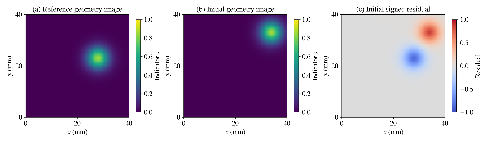
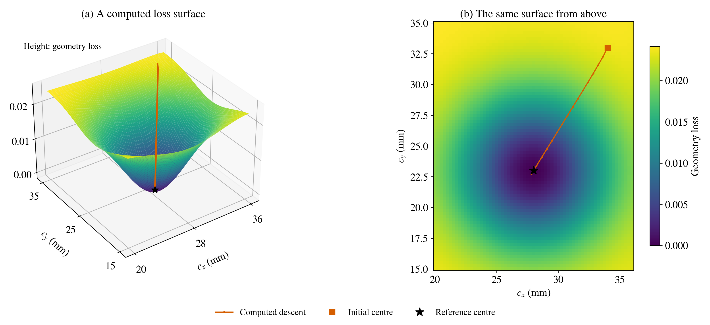
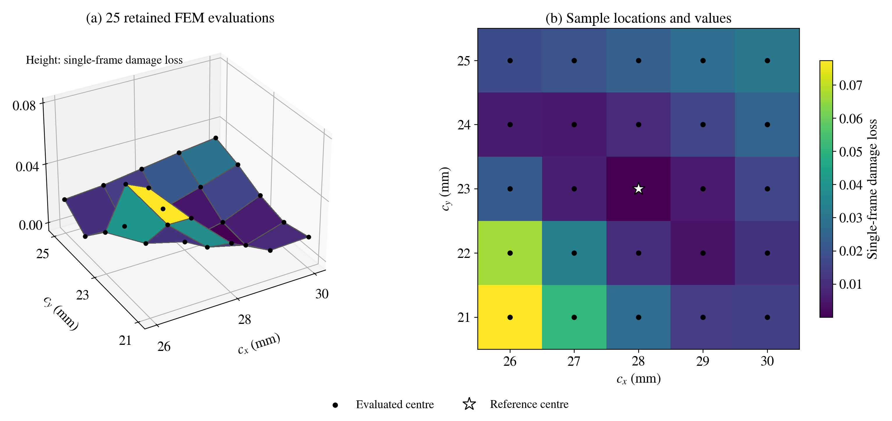
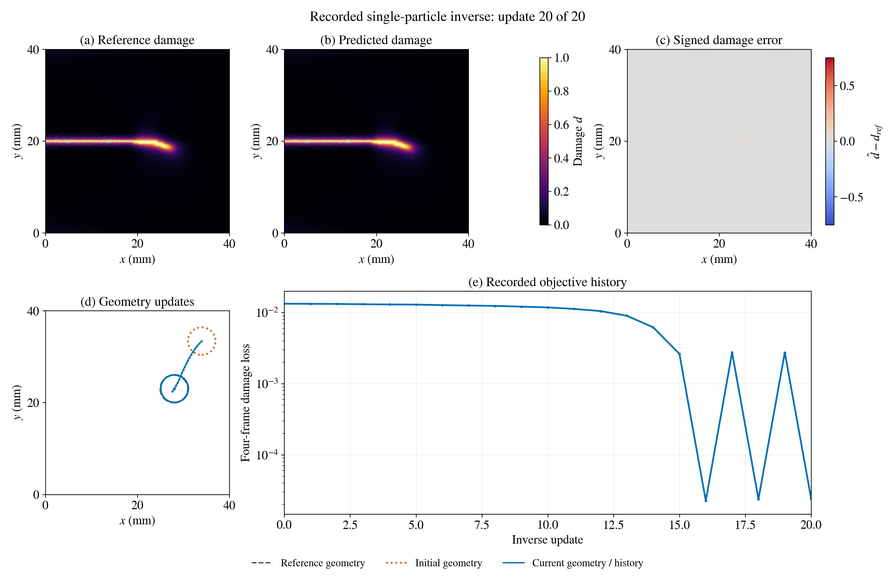
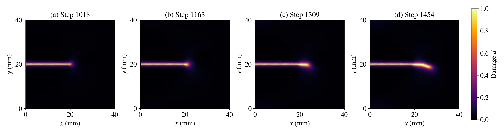

Watch the particle, the crack and the loss#
A loss landscape assigns a height to each candidate parameter pair. Here the horizontal coordinates are the unknown particle centre \((c_x,c_y)\) and the height is the loss. The plate is a physical domain; the landscape is a parameter domain. We connect the two views without confusing them.
This visual laboratory connects three examples: a geometry-image inverse problem, a retained 25-point FEM scan, and a retained fracture-inverse trajectory. Each uses its own stated observations and loss. Videos start only when you press play; their controls provide pause, seeking and fullscreen viewing.
1. Begin with something we can see directly#
Imagine observing a soft-edged image of a circular inclusion in a 40 mm plate. The radius is fixed at 3 mm; only its centre is unknown. This teaching example assumes that the geometry image is measured directly. A real fracture inverse problem observes the response of the specimen instead.
At pixel centres \(\mathbf x_p\), define
We use an \(80\times80\) pixel grid, \(\epsilon=1.5\) mm and reference centre \((28,23)\) mm. This explicitly smooth image makes a compact differentiable example of direct geometry observation.
{kind=link}

Figure 12 The initial centre is \((34,33)\) mm. Both indicator images use the same colour scale. The residual changes sign where the reference and trial images differ. The calculation compares smooth indicator images directly.#
Predict: should moving the candidate circle towards the reference reduce the mismatch? What happens to the information available far from the circle?
2. Lift the same loss into a landscape#
{kind=link}

Figure 13 The surface is calculated at 5,265 centre locations on a \(65\times81\) grid. The map and surface display the same untransformed loss. Orange marks a computed descent using analytic gradients and a sufficient-decrease line search. Surface tessellation connects the calculated values for display.#
At each iterate the algorithm evaluates its current loss and gradient, proposes a direction and tests a step. We compute the complete map afterwards to help interpret its movement. In the companion code, an independent central-difference check tests the analytic derivative at one stated point.
Download the geometry descent animation.
The two panels advance together. Each displayed state is a computed iterate;
the status line identifies its update number.
What should I notice?
The candidate geometry changes on the plate while its centre moves across parameter space. Far from overlap, the mismatch changes slowly, so a gradient can be small even when the position error is large. Near the reference, the loss is more informative. A line search tests whether a proposed update actually reduces the objective.
3. Inspect a real, sampled fracture loss#
For the retained PhAST scan, each of 25 candidate centres was evaluated by a forward fracture calculation. The observation is the damage field at step 1454. Its recorded loss is
This is the archived damage-mass normalization. It differs from both the geometry-image MSE above and the four-frame objective in the next section.
{kind=link}

Figure 14 Exactly 25 retained FEM values are shown. Facets join adjacent samples; the top-down view shows their individual values. The reference centre lies at \((28,23)\) mm. This local same-basin scan represents one fixed observation objective.#
This surface is coarser than the geometry toy because each height requires a fracture solve. A denser grid requires additional solves. The retained grid compares the evaluated nearby candidates; facets serve as visual guides between those samples.
4. Watch a recorded particle recovery#
The next case recovers two centre coordinates with radius and material contrasts fixed. The synthetic reference centre is \((28,23)\) mm and the initial centre is \((34,33.392)\) mm, approximately 12 mm away. The recorded calculation uses four damage observations selected from observed damage-mass increments: steps 1018, 1163, 1309 and 1454.
{kind=link}

Figure 15 Final recorded state after 20 inverse updates. The centre is approximately \((28.080,23.034)\) mm, with a 0.087 mm centre error. The damage panels show the last fitting frame, step 1454. The colour scale represents the full damage range, including diffuse damage. Particle circles and trajectories are shown separately on a geometry plate. The signed-error scale is fixed over the entire animation.#
Download the recorded recovery animation.
Each frame is a saved inverse iterate. Before rendering, consistency checks
compare the underlying FEM damage arrays with the recorded loss history.
The fixed normalized step of 0.75 mm brings the particle close to its target, then overshoots on updates 17 and 19. The plotted history preserves those oscillations. The reference is used to assess the result; the optimizer follows the damage objective. Agreement on these four fitting observations measures the achieved fit; predictive assessment uses separate observations.
Why does the last part of the curve oscillate?
A fixed travel distance can exceed the remaining distance to a low-loss region. After crossing it, the gradient points back. A smaller step or an adaptive step strategy could be tested, but this animation shows the original recorded schedule, including its increases in loss.
5. Separate physical time from inverse updates#
{kind=link}

Figure 16 Four saved reference observations. Here geometry stays fixed while physical time advances. In the inverse animation above, the observation step stays fixed while the candidate geometry changes between forward replays.#
Download the four-frame crack evolution.
Playback advances through the four stored steps. Its duration is chosen for
reading; the frame labels identify the physical observation steps.
Check your interpretation
In a forward movie, the crack evolves under one specified geometry. In an inverse movie, the geometry changes and the forward problem is solved again. The changing particle centre represents an updated estimate; its position stays fixed during each individual forward replay.
Inspect or reproduce the visuals#
The Matplotlib source computes the
geometry toy and renders the retained FEM arrays. The
artifact manifest records the input hashes,
checks, plotting versions and output hashes. Download the
geometry arrays,
retained FEM arrays and
25-point loss grid for inspection.
These compressed data contain the exact plotted values. The
original numerical input bundle
contains the files expected by the renderer. Extract it, then run:
python particle_visuals.py --inputs inputs --output regenerated_visuals
NumPy, Matplotlib and an FFmpeg executable with H.264 support are needed. Use a new output directory to preserve earlier receipts. The downloadable bundle contains the retained numerical inputs used by the renderer.
Vector figures:
geometry observations,
geometry landscape,
FEM loss samples,
inverse recovery, and
physical observation frames.
The two FEM examples replay archived calculations. Their manifests identify the retained inputs, consistency checks and rendering outputs. These materials form the optional inverse extension of the autumn-school book.